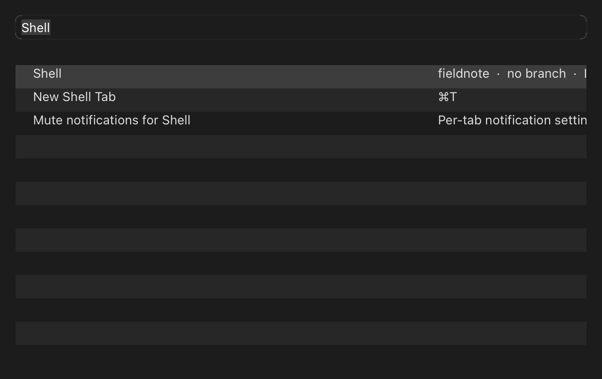
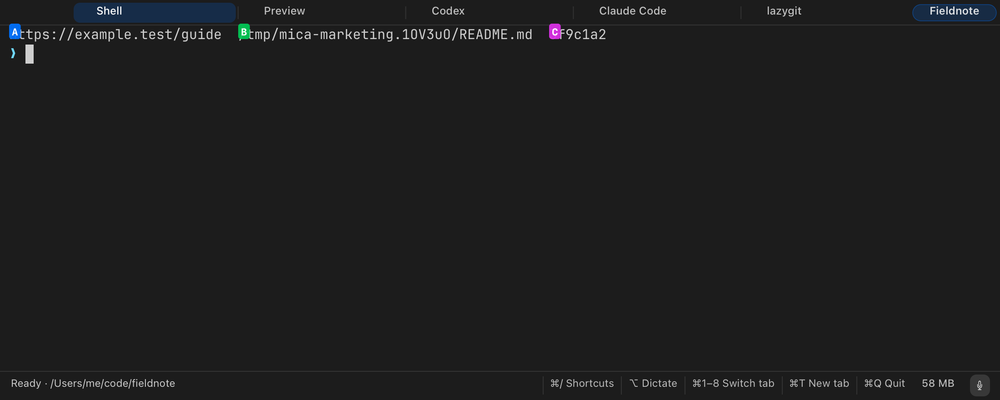
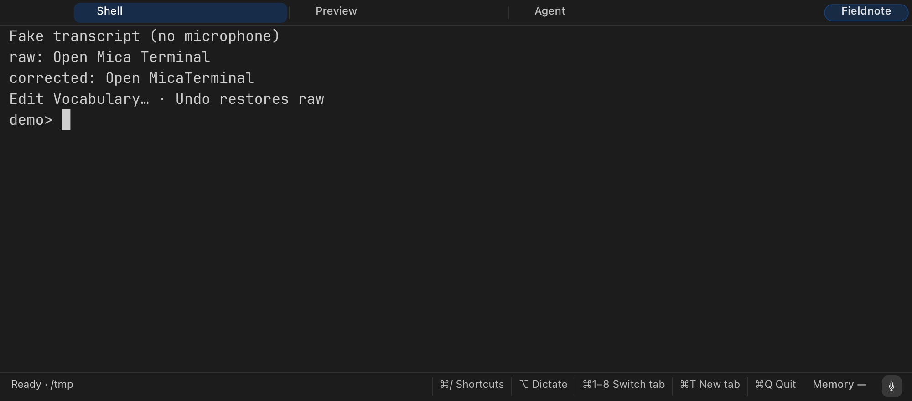
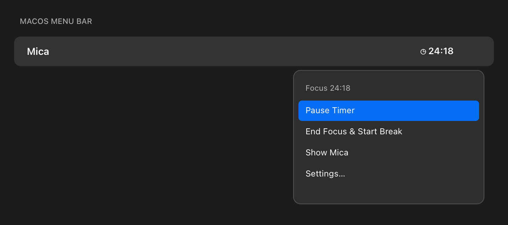
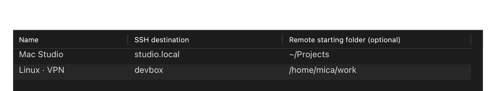

Apple silicon Mac
Requires macOS 14 or later on Apple silicon. Intel Macs are not supported.
Give each project its own named window. See the name in the window, then switch between open projects from Mica’s single Dock icon. Terminal tabs, on-device dictation and a focus timer are built in.
Version 0.1.0 alpha 16 · 10.6 MB · Apple silicon · macOS 14 or later · Free and open source


This real Mica window keeps “Fieldnote” visible in the top-right badge. Switch terminal themes with ⌥⌘L.
An illustrated walkthrough assembled from current Mica window captures and live Dock-menu entries. The project names and terminal output are fictional; the menu panel is drawn for the demo.
Right-click Mica’s single Dock icon to see open project windows and their active tabs. The current window is checked; choosing another entry brings it forward. This demo uses fictional Fieldnote and Northstar projects and local sample output. It does not run an agent, use a microphone or connect to a remote host.
Download the project-switching demo. It is silent and starts only when you press Play.
The tour moves from named project windows to terminal tabs, Command Palette, Quick Select, an example dictation transcript, the focus timer and saved SSH profiles. Project names, commands and destinations are fictional. The Dock chooser and timer menu are illustrated from Mica’s current menu items. The tour uses no microphone, coding agent or remote connection.
Open the looping GIF (no pause control; use MP4 for reduced motion) or download the silent MP4 with playback controls.
On September 29, 2026, one Mica window with three tabs used about 55–60 MB idle on the same Apple silicon Mac as the other measurements. This was before alpha 16, so treat it as a baseline—not a measurement of this release.
Each figure is an idle measurement with one window on the same Mac. Mica’s speech helper adds about 30–37 MB during dictation, then exits; additional project windows share the main Mica process. Window size, settings and macOS affect memory. See the measurement method and caveats.
Prefer to build it yourself? You need the Xcode command line tools; the terminal library ships in the repository and the first build also fetches the speech package.
Mica keeps project identity at the center, then adds fast navigation, local dictation, a shared timer and SSH profiles around ordinary shell sessions.
Open a project in its own named window. The project name appears in the title and top-right badge; hover the badge to see the full name. Right-click Mica’s Dock icon to switch between open projects; each menu entry shows its project name and active tab. Desktop launchers can reopen a project with its folders and startup tabs.

Run Claude Code, Codex, lazygit and other programs in regular zsh tabs. Mica’s activity detection is designed for Claude Code and Codex; screen-based detection is best-effort, and other programs are not guaranteed an agent status. The Git branch appears in the status bar, and a worktree tab can give an agent a separate checkout.
Search menu actions and project tabs with the Command Palette (⌘⇧P). Quick Select (⌘⇧U) labels visible URLs, existing file paths and Git hashes. Type a label to copy; hold Option to open a link or reveal a file.


Hold or toggle left Option to dictate into a multiline preview above the terminal. Edit the transcript before it reaches the prompt. Recognition runs on your Mac with Moondream’s Parakeet Ultra, based on NVIDIA Parakeet TDT 0.6B v3 and converted to Core ML by FluidInference. Mica corrects project vocabulary locally; Undo restores the raw transcript when available.
Mica prepares the model in the background during first setup and after speech-helper updates. If you dictate before setup finishes, the helper loads it on demand. Microphone access is requested only when you start dictating.

One timer is shared across Mica windows. See the current focus or break phase and countdown, then start, pause, resume or end a phase from the menu bar or Focus menu. Mica can notify you when a phase ends.

Set a display name, OpenSSH destination and optional remote folder. Mica opens a fresh interactive tab using macOS OpenSSH and your existing keys, agent, ~/.ssh/config and host-key checks. Profiles can be included in project launchers. Mica stores no SSH passwords or private keys.

Search scrollback with ⌘F, open links with ⌘-click, reorder tabs, navigate prompt landmarks and copy the last command’s output. Mica uses libvterm to parse terminal escape sequences and keeps your normal shell configuration.

Mica is an early, focused terminal app. These boundaries help set the right expectations.
Requires macOS 14 or later on Apple silicon. Intel Macs are not supported.
Use named tabs and project windows to organize terminal sessions.
Activity detection is designed for Claude Code and Codex. Screen-based detection is best-effort; other terminal programs run normally without a guaranteed status label.
Windows, tab names and folders restore. Tabs normally start fresh; optional resume supports Claude Code or Codex only when a validated session ID is available. Arbitrary processes and scrollback do not resume.
No. Speech recognition and vocabulary correction run locally; audio is processed in memory and not saved. The speech model downloads from Hugging Face only when its files are missing. Programs you run in terminal tabs may have their own network and privacy behavior.
Only when you first hold left ⌥ or click the microphone control to dictate. Audio is processed in memory and is not saved. If access is denied, choose Open Microphone Settings in the dictation preview to open macOS Privacy & Security settings.
On first launch and after updates that change the speech helper, Mica prepares dictation in the background. It downloads model files only when they are missing and reuses local files otherwise. If you dictate before setup finishes, the helper loads the model on demand. Setup does not require microphone permission.
Yes. They run as ordinary programs in shell tabs. Activity detection is designed for Claude Code and Codex; Mica does not guarantee an activity status for other programs.
Yes. Save a profile from Session → SSH Connections… and choose its remote folder. Mica uses macOS OpenSSH and your existing SSH configuration, credentials and network route. On the remote Mac, enable Remote Login.
Alpha 16 is Developer ID signed and notarized. Download the SHA-256 manifest beside the package and verify it with shasum -a 256 -c SHA256SUMS.txt.